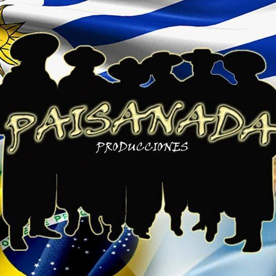

Hola! Somos el alma detrás de Paisanada Producciones. Somos una empresa familiar que siempre ha estado relacionada con el ámbito rural, algo que nos define. Decidimos crear este emprendimiento para que todos aquellos eventos rurales puedan quedar marcados con una fotografía. Realizamos camisas personalizadas para demostrar la sencillez, la nobleza y, sobre todo, la elegancia de lo rural. Gracias.
